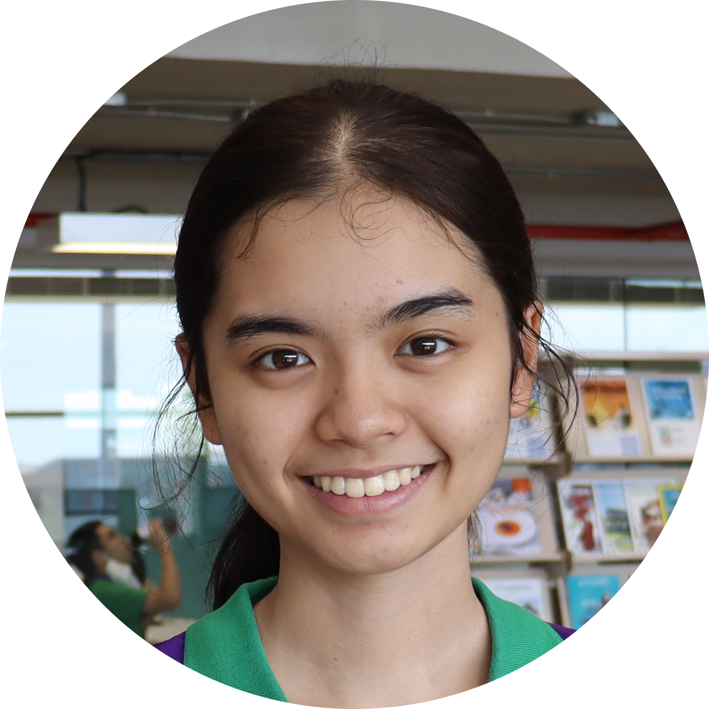
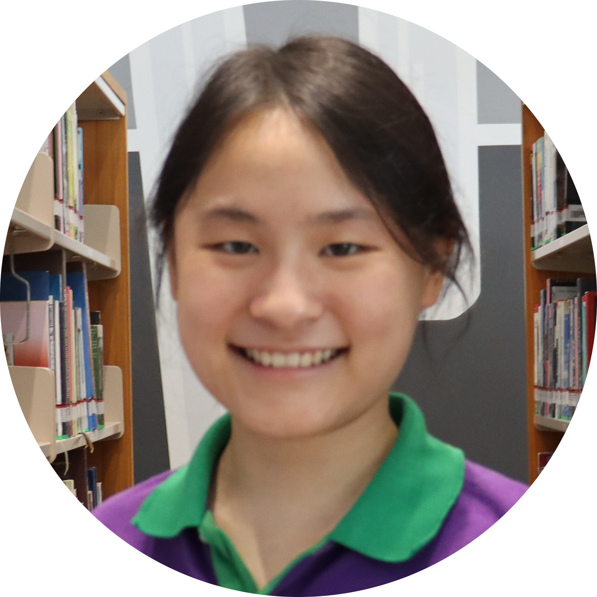
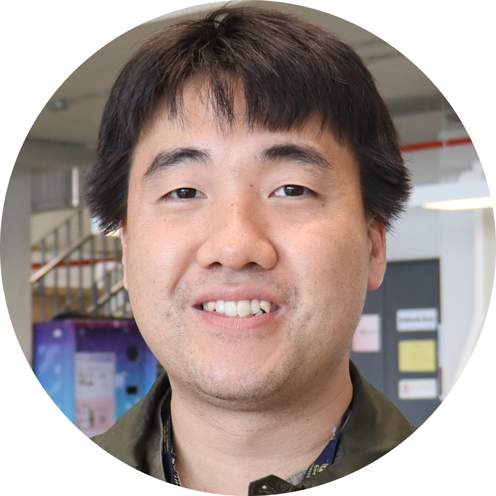

Patanin Ngaensupalak
Patanin is a physics student who also enjoys coding and engineering from Bangkok, Thailand. He is currently doing a research on properties of PLA filament. However, Patanin is always trying to find something new besides his expertise. He approached chemistry and later found himself among one of the team working on AlubaZil. He works on experiments that synthesize the product used in the prototype model of AlubaZil. With his knowledge in computer programming, he contributes greatly to the design of this stunning website.

Nattakorn Chukumnird
Nattakorn is a KVIS student who originates from Songkhla, Thailand. He is interested in groundbreaking innovations and every branch of science, including biology, chemistry, physics, and astronomy. For his school project, he is studying bacterial interactions which makes him specializes in biology laboratory techniques. His great interest in innovation, combined with his skills, made him joined the team and helped our team study the antimicrobial property of AlubaZil.
Worachon Promchaisri
Worachon, who was born and raised in Nakhon Si Thammarat, Thailand, discovered his love for chemistry in middle school and recently took it to new heights when his groundbreaking research "Enhanced Antibacterial Activity at Ag–Cu Nanojunctions: Unveiling the Mechanism with Simple Surfaces of CuNPs-on-Ag Films" was published in ACS Omega. In addition, he is presently working on research projects including quantum computing for medicinal applications and computational modeling for theoretical chemistry findings. Worachon was the driving force behind the team's collaboration and was instrumental in creating the first AlubaZil prototype in addition to leading the group. His proficiency is evident in revealing the product's chemical characteristics, which contributes substantially to the nexus of chemistry and innovation.

Chananrat Tiranumpongvanich
Chananrat, who grew up in a family from Rayong, Thailand, has always been interested in technology and computer science because she attended an Olympiad computer science camp in middle school. Since she was in middle school, she has actually undertaken research in order to achieve her passion for producing breakthroughs. She is currently a student at KVIS and is very interested in using her computer science knowledge in other subject areas, such as chemistry. She is also putting a lot of effort into a research study that examines Bengal Currant extracts as a potential source of gout medication. She joined our team for the reason that all of this evidence points to. She also made a significant overall contribution to AlubaZil's promotional film and prototype development.

Rawisara Chokdeepanich
Rawisara came from Bangkok, Thailand to study at KVIS. Similar to Worachon, she loves chemistry so much that her passion guided her to win the gold medal in Thailand’s Chemistry Olympiad last year. At KVIS, she is also working on a chemistry project. She joined our team with the hope that she could try out new things in her life that involve applying her knowledge. Moreover, she got to try other new things like being the main actor in AlubaZil’s promotion video.

Coach Yutichai Mueanngern
Coach Yutichai is a teacher working at KVIS who originates from Bangkok, Thailand. He is a well-experienced teacher who also helped shaping the idea of AlubaZil because of his passion of exploring and doing research.